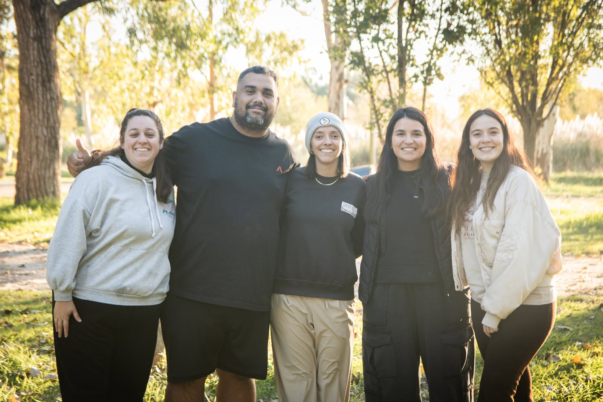

Luciana Valle
Es parte de LAGRAM hace mas de 15 años. Es miembro de la Iglesia Somos. Está casada con Santi y trabaja como docente de Nivel Inicial.

Quiénes somos, cómo nos organizamos y de dónde venimos.
Somos un grupo de personas que ama a los adolescentes y trabaja con el deseo de que ellos vivan una amistad con Jesús. Nuestra existencia está íntimamente ligada a las iglesias locales. Recibimos de ellas adolescentes que participan de nuestras actividades y voluntarios que forman parte de los equipos de trabajo, quienes vuelven a sus congregaciones enriquecidos por la experiencia vivida con nosotros.
Como enseña nuestra visión, creemos que los adolescentes pueden crecer de manera integral en una relación con Jesús y sentimos que podemos hacer un aporte a este proceso. Este crecimiento es integral porque no sólo apunta a lo espiritual, sino también a lo físico, emocional, intelectual y social. Consideramos central que en esta etapa puedan desarrollar relaciones de discipulado con referentes en la fe, convicciones basadas en la práctica de la sabiduría y un entendimiento de la implicancia que tiene la vocación en sus próximos años.
Como organización, tenemos una identidad que nos distingue que llamamos ADN y está compuesto por los siguientes elementos:
Promovemos la dirección compartida en todas nuestras esferas basada en la convicción de que siempre dos son mejor que uno; y que el trabajo en equipo es una experimentación real de la Iglesia como cuerpo.
Es parte de LAGRAM hace mas de 15 años. Es miembro de la Iglesia Somos. Está casada con Santi y trabaja como docente de Nivel Inicial.

Es parte de LAGRAM hace más de 15 años. Es miembro de la Iglesia Emanuel y trabaja asesorando a docentes de Nivel Primario.

Los Directores Generales están acompañados por tres miembros representativos del Equipo de Trabajo elegidos por nuestros voluntarios. En este momento la Comisión Directiva está formada por Camila Justo, Lucas Turriaga y Martina Valle.
 Camila Justo
Camila Justo
 Lucas Turriaga
Lucas Turriaga
 Martina Valle
Martina Valle
Entre 1987 y 1992, Esteban Borghetti, Lucas Leys, Germán Ortiz y Martín Sánchez, participan juntos de los campamentos de preadolescentes y adolescentes de LAPEN. En 1992 deciden fundar una organización independiente centrada en el trabajo con adolescentes a la que llaman LAGRAM y comienzan a planear el primer campamento en invierno de ese año.
En el año 2000, además de los campamentos de 13 a 15 y 16 a 18 años empezamos a realizar campamentos para preadolescentes de 10 a 12 años, y en 2005 sumamos la propuesta de campamentos para jóvenes de 19 a 26 años.
En la historia de LAGRAM, además de los campamentos, surgieron diversas propuestas para adolescentes y líderes: conciertos, festivales, publicaciones de libros, viajes de aventura en la naturaleza, eventos deportivos, actividades misioneras y programas de entrenamiento para líderes de iglesias locales.
Developed by Valentín Himitian